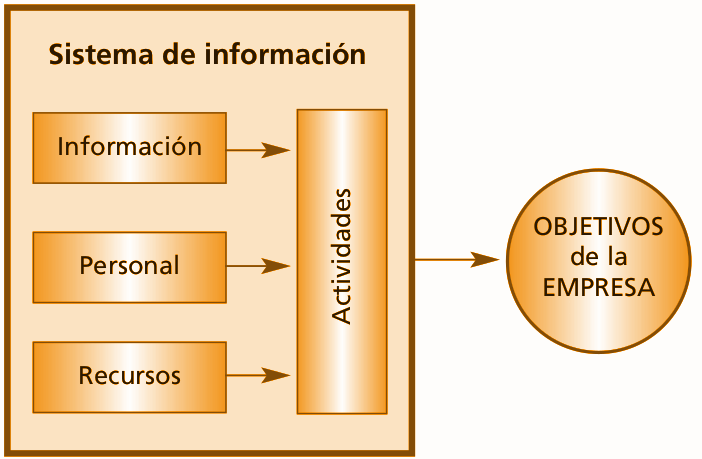
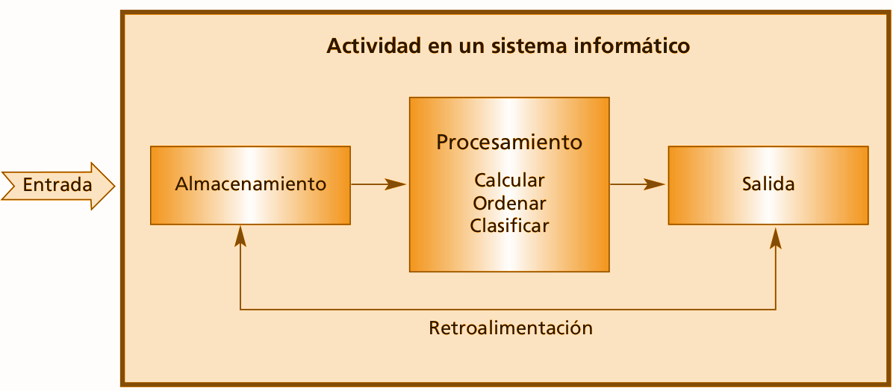
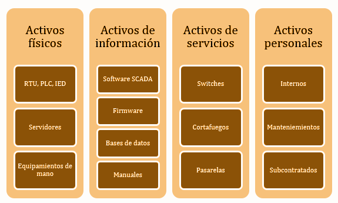
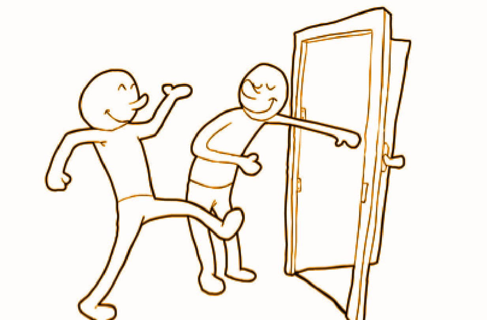
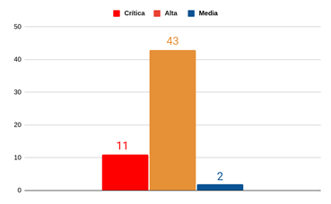
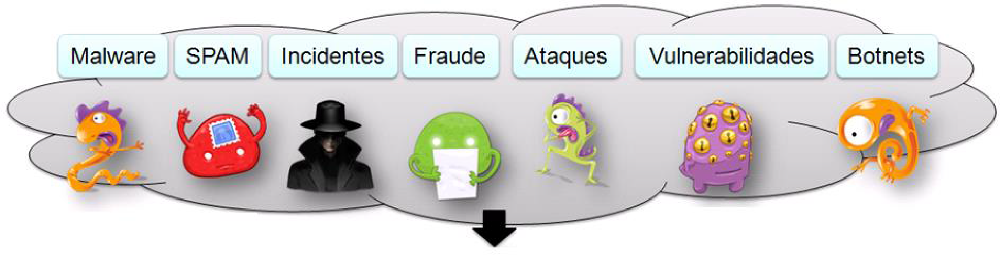
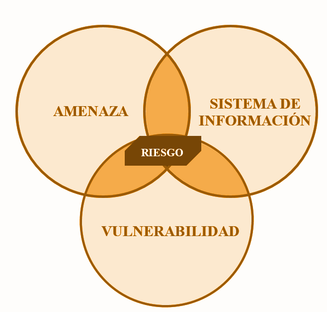
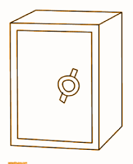
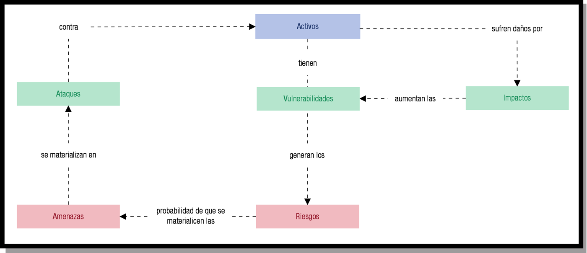
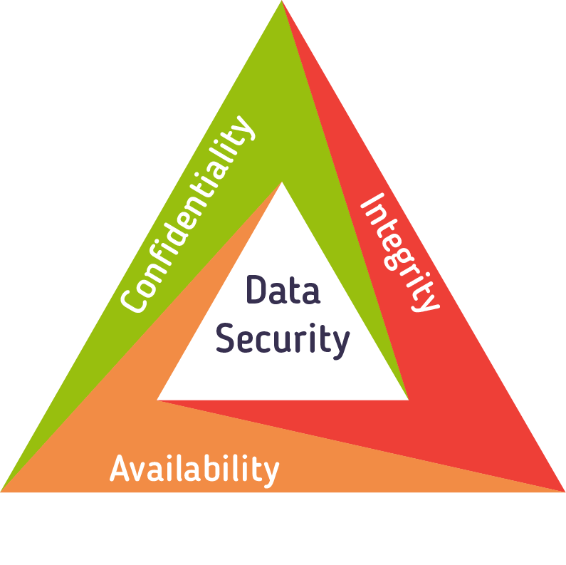

1.1.-PrincipiosGenerales

Principios generales de la organización en materia de ciberseguridad
RA1¶
a) Se han definido los principios generales de la organización en materia de ciberseguridad, que deben ser conocidos y apoyados por la dirección de la misma.
ÍNDICE¶
- ¿Que es la Ciberseguridad?
- Sistema de información e informático
- Principios generales
- Confidencialidad
- Integridad
- Disponibilidad
- Otros
- A que nos enfrentamos
- Activos
- Vulnerabilidad
- Amenaza
- Riesgos
- Medidas de seguridad
- Todo junto
- ¿Qué hacer?
-
Plan director
-
¿Que es la Ciberseguridad?
- Sistema de información e informático
¿Qué es la ciberseguridad?¶
__Ciberseguridad: __ Conjunto de actividades dirigidas a proteger el ciberespacio contra el uso indebido del mismo\, defendiendo su infraestructura tecnológica\, los servicios que prestan y la información que manejan
Sistema de información¶
Sistema de información \(SI\) __: __ un conjunto de elementos organizados\, relacionados y coordinados entre sí\, encargados de facilitar el funcionamiento global de una empresa o de cualquier otra actividad humana para conseguir sus objetivos.

Sistema informático¶
Sistema informático: __ __ Un sistema informático está constituido por un conjunto de elementos físicos \(hardware\, dispositivos\, periféricos y conexiones\)\, lógicos \(sistemas operativos\, aplicaciones\, protocolos…\) y con frecuencia se incluyen también los elementos humanos \(personal experto que maneja el software y el hardware\).

Un sistema informático puede ser un subconjunto del sistema de información
Un sistema de información no tiene por qué contener elementos informáticos\, aunque en la actualidad se hace difícil imaginarse esta situación
Se tratará la seguridad de los sistemas de información en general\, y los sistemas informáticos en particular
Sistema de información¶
vs
Sistema informático
ÍNDICE¶
- ¿Que es la Ciberseguridad?
- Sistema de información e informático
- Principios generales
- Confidencialidad
- Integridad
- Disponibilidad
- Otros
Principios generales¶
Cuando hablamos de Ciberseguridad hablamos de los siguientes principios generales :
Confidencialidad
Integridad
Disponibilidad

Confidencialidad : cualidad de la información para no ser divulgada a personas o sistemas no autorizados. Se trata básicamente de la propiedad por la que esa información sólo resultará accesible con la debida y comprobada autorización.

Disponibilidad : Por disponible entendemos aquella información a la que podemos acceder cuando la necesitamos a través de los canales adecuados siguiendo los procesos correctos.
__Integridad: __ “estado de lo que está completo o tiene todas sus partes”. La integridad hace referencia a la cualidad de la información para ser correcta y no haber sido modificada\, manteniendo sus datos exactamente tal cual fueron generados\, sin manipulaciones ni alteraciones por parte de terceros.

Además\, principios generales:
Fiabilidad : funciona correctamente
Autenticidad : La información es lo que dice ser\, y el transmisor de la información es quien dice ser
No repudio : En la transmisión de información no se puede negar ni el envio ni la recepción.
ÍNDICE¶
- ¿Que es la Ciberseguridad?
- Sistema de información e informático
- Principios generales
- Confidencialidad
- Integridad
- Disponibilidad
- Otros
- A que nos enfrentamos
- Activos
- Vulnerabilidad
- Amenaza
- Riesgos
- Medidas de seguridad
- Todo junto
¿A qué nos enfrentamos?¶
Ciberseguridad estamos hablando de amenazas \, de entender lo que está sucediendo\, quién está detrás y por qué.
Estamos hablando también de tecnología \, inherente ya en todos los procesos\, pero en éstos en particular en mayor medida.
Activos¶
Activo: cualquier recurso de la empresa necesario para desempeñar las actividades diarias y cuya no disponibilidad o deterioro supone un agravio o coste.


Intenta definirlas
Vulnerabilidad vs Amenaza¶
La diferencia entre vulnerabilidad y amenaza es muy interesante\, aunque son términos que se confunden a menudo.
Intenta definirlas
Las vulnerabilidades son las condiciones y características propias de los sistemas de una organización\, de los activos \, que la hacen susceptible a las amenazas .
Las amenazas atentan contra la seguridad\, por tanto\, se incumplirán los principios generales de la seguridad de la __ __organización .
Problema : si existe una vulnerabilidad\, siempre existirá alguien que intentará explotarla\, es decir\, sacar provecho de su existencia.


¿ejemplos de vulnerabilida?
Vulnerabilidad propia del sistema
Vulnerabilidad¶
Una __ vulnerabilidad __ es una debilidad o fallo en un sistema de información que pone en riesgo la seguridad de la información pudiendo permitir que un atacante pueda comprometer la integridad \, disponibilidad o confidencialidad de la misma\, por lo que es necesario encontrarlas y eliminarlas lo antes posible.

No nos olvidemos de la:
Autenticidad
Fiabilidad
No repudio
Vulnerabilidades en TCP/IP en Microsoft

Número total de vulnerabilidades: 56
11 __ __críticas
43 altas
2 medias

Amenaza¶
__Amenaza: __ toda acción que aprovecha una vulnerabilidad para atentar contra la seguridad de un sistema de información. Es decir\, que podría tener un potencial efecto negativo sobre algún elemento de nuestros sistemas. Desde el punto de vista de una organización pueden ser tanto internas como externas.

- Amenaza: naturaleza de a lo que afecta:
- Lógica
- Física
- Amenaza: como interfiere
- Interrupción
- Interceptación
- Modificación
- Fabricación

Riesgo¶
El riesgo es la probabilidad de que se produzca un incidente de seguridad\, materializandose una amenaza y causando pérdidas o daños.
El riesgo depende entonces de los siguientes factores: la probabilidad de que la __ amenaza __ se materialice aprovechando una __ vulnerabilidad __ y produciendo un daño o impacto . El producto de estos factores representa el riesgo existirá alguien que intentará explotarla\, es decir\, sacar provecho de su existencia.
PROBABILIDAD DE QUE OCURRA

El riesgo es la probabilidad de que una amenaza se materialice por el impacto que provocaría la explotación de una vulnerabilidad.
Podemos identificar los activos críticos de los sistemas de información que pueden suponer un riesgo \, realizando un análisis de riesgos
__Este análisis nos llevará a obtener una imagen rigurosa de los riesgos a los que se encuentra expuesta una organización. __
Medidas de seguridad¶
El tratamiento del riesgo \(control\) supone unos claros beneficios para la «salud» de la ciberseguridad.
De esta manera mantendremos protegida nuestra información confidencial frente a la mayoría de amenazas y vulnerabilidades detectadas \(o no\)\, evitando robos y fugas de información.



Con el análisis del riesgo averiguamos la magnitud y la gravedad de las consecuencias del riesgo a la que está expuesta la organización.
Para ello tendremos que definir un umbral que determine los riesgos asumibles de los que no lo son.
En función de la relevancia de los riegos podremos optar por:
Evitar el riesgo eliminando su causa\, por ejemplo\, cuando sea viable optar por no implementar una actividad o proceso que pudiera implicar un riesgo.
Adoptar medidas que mitiguen el impacto o la probabilidad del riesgo a través de la implementación y monitorización de controles.
Compartir o transferir el riesgo con terceros a través de seguros\, contratos etc.
Aceptar la existencia del riesgo y monitorizarlo.
A los procedimientos utilizados para reducir los riesgos o minimizar su impacto se les denomina __ “mecanismos o medidas de seguridad”.__
Se dividen en tres grandes grupos:
Controles preventivos : eliminan o reducen la posibilidad de que las amenazas lleguen a materializarse. Por ejemplo: un firewall o un sistema de autenticación.
Medidas de reacción y recuperación: reducen el impacto en caso de haberse materializado las amenazas.
A los procedimientos utilizados para reducir los riesgos o minimizar su impacto se les denomina “mecanismos o medidas de seguridad”.
Se dividen en tres grandes grupos:
Controles de detección : permiten detectar un suceso no deseado. Por ejemplo un IDS \(Sistema de Detección de Intrusos\)
Mecanismos o medidas de seguridad\, ejemplos:
Disponer de dispositivos redundantes \(duplicado\) para poder sustituirlo en caso de un problema.
Recuperar un sistema al estado más próximo previo a la ocurrencia de una amenaza.
Realizar un backup\, o copia de seguridad de nuestros datos.
Entonces ¿ Cómo __ realizamos este __ análisis que nos permita __identificar las Medidas de Seguridad __ de un sistema?
Fase 1: Definir el alcance del análisis . Es decir\, si nos centramos en un servicio\, departamento y actividades o alguno en concreto.
Fase 2: Identificar qué activos de qué sistema\, departamento\, servicio\, etc participarán en el estudio y su valoración.
Fase 3: Identificar las medidas de seguridad existentes \, es decir. Si no hay\, entonces hay puntos débiles.
¿Cómo actuamos para solventar las principales riesgos de un sistema?
Fase 4: Descubrir los puntos débiles o vulnerabilidades que afectan a los activos.
Fase 5: Valorar las __posibles amenazas __ que pueden afectar a los activos.
Fase 6: Obtener __ el riesgo para cada activo/amenaza__ \, valorar la probabilidad y el impacto sobre el negocio que produciría un ataque..
¿Cómo actuamos para solventar las principales riesgos de un sistema?
Fase 7: Establecer los objetivos de seguridad de la organización . El umbral por encima del cual la organización tomará medidas.
Fase 8: Seleccionar las medidas de protección posibles.

Todo junto¶

ÍNDICE¶
- ¿Que es la Ciberseguridad?
- Sistema de información e informático
- Principios generales
- Confidencialidad
- Integridad
- Disponibilidad
- Otros
- A que nos enfrentamos
- Activos
- Vulnerabilidad
- Amenaza
- Riesgos
- Medidas de seguridad
- Todo junto
- ¿Qué hacer?
- Plan director
Seguridad informática¶
Mediante la seguridad informática \, se definirán las normas\, procedimientos\, métodos y técnicas destinados a conseguir un sistema de información seguro y confiable :

Planes, políticas, normativas¶

Un Plan Director de Seguridad consiste en la definición y priorización de un conjunto de proyectos en materia de seguridad de la información con el objetivo de reducir los _ _riesgos a los que está expuesta la organización hasta unos niveles aceptables.

Plan director
Plan Director de Seguridad | INCIBE
Plan Director de Seguridad ¿Cómo implantarlo en tu empresa?
Políticas
Políticas de seguridad para la pyme | INCIBE


Sistema de gestion de seguridad de la información¶
Un Sistema de Gestión de la Seguridad de la Información \( __SGSI__ \) \(en inglés: Information Security Management System\, ISMS\) es\, como el nombre lo sugiere\, un conjunto de políticas de administración de la información. El término es utilizado principalmente por la ISO/IEC 27001 \,1 aunque no es la única normativa que utiliza este término o concepto.
Un SGSI es para una organización el diseño\, implantación\, mantenimiento de un conjunto de procesos para gestionar eficientemente la accesibilidad de la información\, buscando asegurar la confidencialidad\, integridad y disponibilidad de los activos de información minimizando a la vez los riesgos de seguridad de la información.